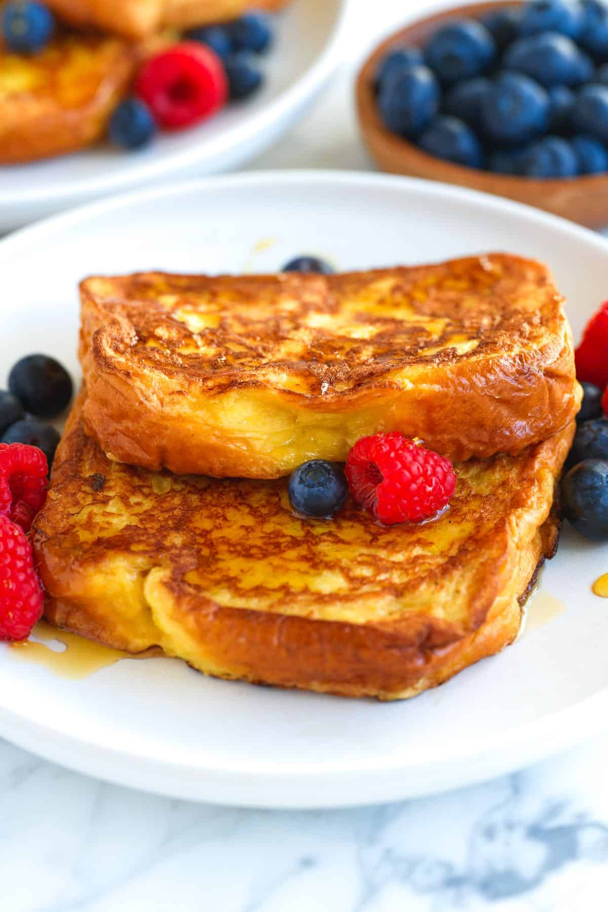

French Toast

Description
French toast is a dish made from slices of bread dipped in a batter of beaten eggs and often milk or cream, then pan-fried until golden brown.
Ingredients
- 6 slices of bread
- 2 eggs
- 1tbsp of butter
- 2/3 cup of milk
- 1/2 tsp salt
- 1 tsp Vanilla
Steps
- Whisk milk, eggs, vanilla, and salt together in a shallow bowl.
- Lightly butter a griddle or skillet and heat over medium-high heat. Dunk bread in the egg mixture, soaking both sides.
- Transfer to the hot skillet and cook until golden, 3 to 4 minutes per side.
- Serve hot.
Home